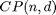
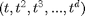
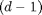
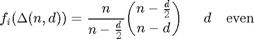
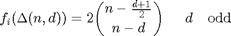

Verification of the Upper Bound Theorem (McMullen, 1970) in 5 dimensions
Contents
Introduction
The cyclic polytope  may be defined as the convex hull of vertices on the moment curve . The precise choice of which points on this curve are selected is irrelevant for the combinatorial structure of this polytope. The number of  -dimensional facets (faces) of is given by the formula:


The upper bound theorem states that cyclic polytopes have the largest possible number of faces among all convex polytopes with a given dimension and number of vertices.
Initial data
Set the points the convex hull of which is to be calculated.
t=(0:0.1:2)'; points=[t,t.^2,t.^3,t.^4,t.^5];
Processing
Find the point identities defining each facet of the convex hull of the point set.
chull1=convhull_nd(points);
Post-processing
Find the number of the facets of the convex hull.
nfacets1=size(chull1,1)
nfacets1 = 306
Calculate the number of points the convex hull of which was calculated, as well as their dimension.
[n,d]=size(points)
n =
21
d =
5
Calculate the maximum number of faces (4-dimensional facets) that a 5-dimensional convex hull () of 21 points can have.
maxfacets=2*nchoosek(n-(d+1)/2,n-d)
maxfacets = 306
Check the validity of the Upper Bound Theorem.
if maxfacets<nfacets1 error('Upper Bound Theorem not satisfied') end
Contact author
(c) 2014 by George Papazafeiropoulos First Lieutenant, Infrastructure Engineer, Hellenic Air Force Civil Engineer, M.Sc., Ph.D. candidate, NTUA
Email: gpapazafeiropoulos@yahoo.gr
Website: http://users.ntua.gr/gpapazaf/